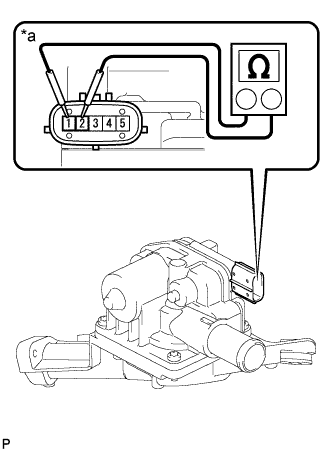
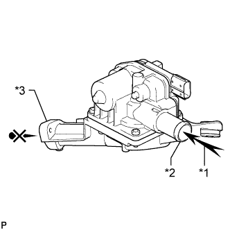
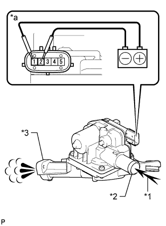

AIR SWITCHING VALVE (for Bank 1) > INSPECTION |
| 1. INSPECT AIR SWITCHING VALVE ASSEMBLY |
|  |
Measure the resistance according to the value(s) in the table below.
| Tester Connection | Condition | Specified Condition |
| 1 - 2 | 20°C (68°F) | 3.0 to 7.4 Ω |
| 1 - Body ground | Always | 1 MΩ or higher |
| 2 - Body ground |
| *a | Component without harness connected (Air Switching Valve) |
|  |
Check the operation of the air switching valve.
Check that air does not flow from port A to port B.
| *1 | Air |
| *2 | Port A |
| *3 | Port B |
|  |
Apply battery voltage across terminals 1 and 2.
Check that air flows from port A to port B.
| *1 | Air |
| *2 | Port A |
| *3 | Port B |
| *a | Component without harness connected (Air Switching Valve) |